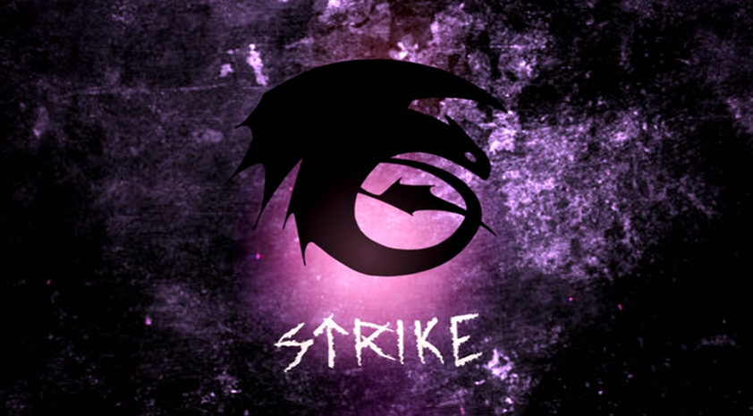
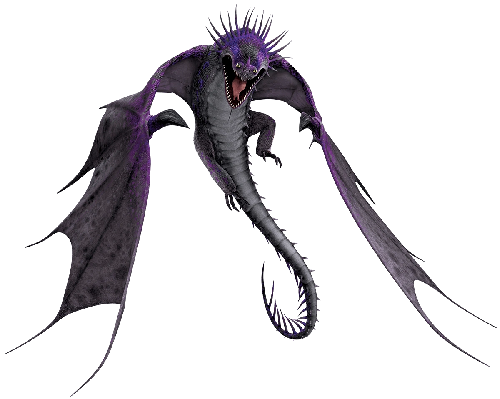
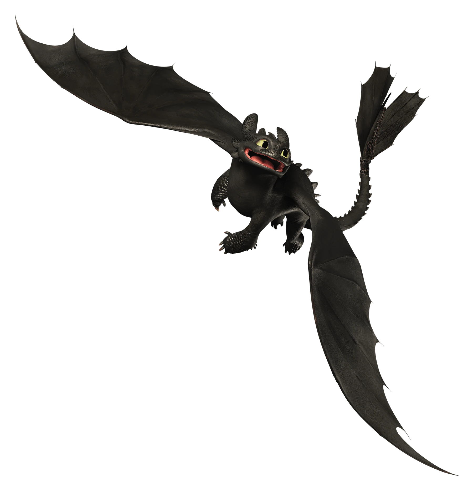
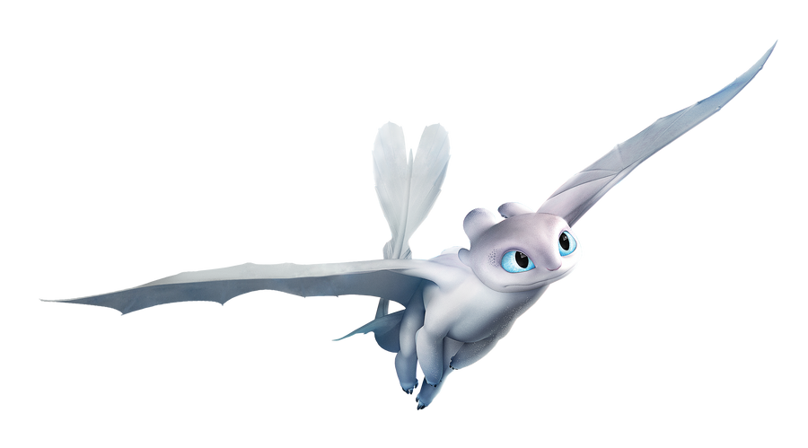

Strike Class Dragons
Strike Class dragons are characterized by their extreme speed, high jaw strength, and superior intelligence. Some members of this Class possess pinpoint accuracy and unique abilities that allow them to navigate in their respective environment/atmosphere.
The dragon species included are:
Skrill
(skrill)
Description:
One of the most mysterious and feared dragon species in the Book of Dragons, the Skrill is aggressive, powerful, and nearly untrainable.
Skrills do not breathe fire. Instead, they channel lightning down their metallic spines, firing it from their mouths in a shower of destructive blasts. They can also store this electrical power in their bodies an release it later on. Because of this unique firepower, Skrills tend to gravitate towards stormy weather. If you find yourself flying through a thunderstorm, watch out! Skrills are also tough. They can take a lot of damage in battle, and give as good as they get. However, the Skrill has one weakness...it cannot fire its lightning from the water. Force a Skrill into the ocean, and it loses the upper hand.
They can hibernate in icy glaciers for decades at a time, and emerge as fierce as the day they were frozen.
Characteristics:
The Skrill has large wings and a spiked back and tail. These spines are metallic in nature and conduct the arcing electricity that it uses as its unique firepower.
The Skrill possess a crown of spikes on its head which are all similar in length, like those of a Deadly Nadder. The Skrill's crown can also be used to give it expression, as it can control them to be pulled back or forward. Skrills have three short spines on their chin. They also have a row of large, overlapping scales along either side of their necks
6.7 meters long & 1.84 meters tall
How to train them:
Depending on the method, training a Skrill can be incredibly difficult or close to impossible. They are aggressive and stubborn, refusing to be trained even in times of crisis. However, by treating it with respect and showing it mercy instead of cruelty, you can gain its trust. The Skrill would return its gratitude with a dignified bow.
Another way to train a Skrill is to find its egg and train it from when it hatches.
Because skrills are attracted to metal due to its electrical properties, A much easier way of training a Skrill was waving a metal dagger around slowly in front of a skrill it will soothe them and calm them down. Once the skrill realizes you're not a threat, you can gently touch its nose to bond with it.
Night Furry
(night furry)
Description:
The Night Fury was once considered to be one of the most mysterious and fearsome species of dragons. Night Fury preferred to attack at night, when their black scales allowed them to blend into the night sky, making them mostly invisible. They have the ability to "dive bomb," meaning that they can plummet from great heights, gaining speed as they continue downwards, then shoot a "plasma blast" at their target.
While they may initially seem like vicious, dangerous creatures, they are highly intelligent, loyal and fiercely protective of those they care about.
Characteristics:
The Night Fury somewhat resembles an axolotl, gecko, and black panther in general appearance and has one pair of wings with a shape similar to a bat; two pairs of tail-fins, one at the base of the tail and the other at the tip, used for control in flight; four mobile, ear-like appendages on the back of its head that show its mood and help it hear; as well as other small tendril-like appendages around their jaw depending on their age. Night Furies have a pair of large, yellowish-green, cat-like eyes and sharp retractable teeth. Unlike most dragon species, the Night Fury lacks any kind of horns, only having flaps and aerodynamic fin-like appendages.
The Night Fury’s aerodynamic jet-like wings and sleek body allow it to fly at supersonic speeds, faster than any other dragon apart from the Light Fury. It uses the fins on its tail to help steer and maneuver, similar to an airplane rudder. However, a Night Fury will be incapable of flying if one of these fins is missing or destroyed, which shows that they are also used for ballast in flight. It is capable of taking flight from a standing start like a pigeon.
Much like Light Furies, Night Furies are capable of cloaking. This allows them to blend into their surroundings. They do this in a similar manner to the Skrill, by summoning/absorbing lightning from the sky to encase themselves in lightning to heat up their scales and turn them reflective, causing an electric aura to surround them and become temporarily invisible, although it has been shown to use up a lot of their energy.
8.74 meters long & 1.75 meters tall
How to train them:
Night Furies are very reclusive and distrustful. If ever found, the first step to training it would be to gain its attention. Next, one has to gain its trust and show that you are of no threat. Like training most other dragons, training this dragon requires mutual respect and trust. After that, the good old method of strengthening a bond by placing a hand on his snout works best.
Light Furry
(light furry)
Description:
The Light Fury moves as fast as a night furry and shares it's ability to blend into the sky — even during daylight hours.
With her white coloration, the light fury hides seamlessly in clouds, sea fog, and distant horizons.
Characteristics:
Light Furies greatly resemble Night Furies, but they are sleeker and less heavy with lighter coloring and glimmering textures that include white, blue, and pink. They possess a long, single spine running down the center of their back and light blue eyes. They also have two pairs of ear-like appendages on the top of their heads and a pink-colored nose. They also have some very light blue on their underbelly/chest area and feet. They are also somewhat smaller than Night Furies.
Light Furies possess the ability to seemingly disappear by flying through the blasts of their plasma fire. This is, in fact, a form of cloaking that occurs when they heat up the trace silicates in their skin, causing their scales to have mirror-like qualities, allowing them to temporarily blend in with their surroundings using reflection of the light.
6.7 meters long & 1.65 meters tall
How to train them:
Light Furies can be very aggressive. However, a Light Fury's trust can be slowly earned. If a person helps a Light Fury or saves its life, the dragon will return the favor, and will from then on be a friend. Another way is to find its egg and train it from when it hatches.
Contact us
Contact no.: 0991-482-1222
Email: elijahlaqui@gmail.com
Facebook: Elijah Kean Laqui